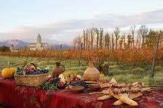
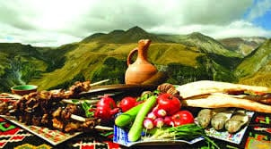
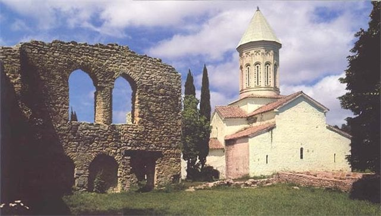

კახეთი — ისტორიულ-გეოგრაფიული რეგიონი აღმოსავლეთ საქართველოში.
კახეთი ერთ-ერთი დიდი რეგიონია საქართველოს ფარგლებში.
კახეთი ცნობილია კულტურულ ძეგლთა სიმრავლით.
არაერთი ეკლესია-მონასტერი თუ ციხესიმაგრე იპყრობს ტურისტებისა და ექსკურსანტების ყურადღებას.
კახეთის გამორჩეულად ცნობილი კულტურული ძეგლებია: ნინოწმინდა, ბოდბე, ხორნაბუჯი, უჯარმა, სიღნაღი, გურჯაანის ყველაწმინდა, ალავერდი,
ახალი და ძველი შუამთა, იყალთო, გრემი, ნეკრესი.
თითოეული ეკლესია-მონასტერი ძველი ტრადიციის მატარებელია, დღემდე მოქმედებს მათი სახელობითი დღესასწაულები.
ეს კი საუკეთესო ფაქტორია მომლოცველთა ან უბრალოდ კულტურული ტურიზმით დაინტერესებულთათვის.
მხარეს დიდი პოტენციალი აქვს ღვინის ტურიზმის განვითარებისთვის.
კახეთის მეღვინეობის ისტო- რია ჩვ. წ. აღ-მდე III–II საუკუნეში იწყება და დღემდე მხარის ეკონომიკის უმნიშვნელოვანეს დარგს წარმოადგენს.
ტრადიციები

კახეთი მევენახეობისა და მეღვინეობის ერთ-ერთი უძველესი კერაა. აქ ვაზის 80-მდე ჯიშია გავრცელებული.საქართველოს ყოველ მხარეს მისთვის დამახასიათებელი სამზარეულო აქვს. კახეთში უფრო პოპულარული ხორცის კერძებია,რაც მეცხოველეო- ბის განვითარებასთანაა დაკავშირებული. ხშირად მზადდება მწვადი, ხინკალი, ხაშლამა, ჩაქაფული.კახეთი აგრეთვე ცნობილია ჩურჩხელით.
ბამბის ძაფზე ასხმულ ნიგოზს, თხილს, ქიშმიშს ან ჩამიჩს თათარაში სამჯერ ავლებენ.
ასე მზადდება აღმოსავლეთ საქართველოშიჩურჩხელა და დასავლეთ საქართველოში ჯანჯუხა.
კარგი ჩურჩხელა და ჯანჯუხა გაზაფხულამდე ძლებს.
საუკუნეების განმავლობაში ქართველ მოლაშქრეთა ერთ-ერთი მთავარი საკვები ჩურჩხელა იყო.
დიპლიპიტო — დასარტყამი საკრავია. იგი შედგება ტოლი სიმაღლის (20-25სმ) და სხვადასხვა დიამეტრის თიხის ორი ქილისაგან,
რომლებზეც ციკნის ტყავი ან ხარის ფაშვია გადაკრული. ნაირფრად მოხატული ქილები თასმითაა გადაბმული. დიპლიპიტოზე ხის ორი პატარა ჯოხით უკრავენ.
ჟღერადობის გასაძლიერებლად ტყავს ცეცხლზე ათბობენ.
კახური სამზარეულო

კახეთი განთქმულია ვენახებითა და შესანიშნავი ღვინით, კახური სამზარეულოს ტრადიციული კერძებია: მწვადი, ხაშლამა, ჩაქაფული, ჩიხირთმა,ხონკალი და სხვ. კახური მწვადი ვაზის ლერწზე იწვება, რაც მწვადს განუმეორებელ გემოს ანიჭებს. ყურძნის წვენის - ბადაგისაგან ამზადებენ ტრადიციულ ტკბილეულს: ჩურჩხელასა და თათარას (ფელამუშს).ასევე კახეთში ცხვება მოგრძო ფორმის შოთის პური.
კახეთის ღირშესანიშნაობები
ალავერდი
ალავერდის ტაძარი მრავალჯერ დაზიანებულა მიწისძვრებისგან. ტაძრის ყველა აღდგენილი ნაწილი აგურით არის ნაგები. XIX საუკუნის ბოლოს ალავერდის ტაძარი შიგნით მთლიანად შეათეთრეს.
ალავერდის ხუროთმოძღვრულ კომპლექსში, რომელსაც გარშემორტყმული აქვს გალავანი (XVII-XVIII სს.),გაერთია- ნებულია სხვადასხვა დროის ნაგებობები. თავდაპირველად ალავერდი მამათა მონასტერი იყო. XVII-XVIII საუკუნეებში კი აქ დაარსდა დედათა მონასტერიც, სადაც მონაზვნად აღკვეცილი სამეფო ოჯახის წევრები ცხოვრობდნენ. ალავერ- დი ლიტერატურული საქმიანობის მძლავრი კერაც იყო. აქ მოღვაწეობდნენ ქა- რთველი მწერლები, კალიგრაფები, მწიგნობარნი, მ.შ. ფილიპე ალავერდელი (XVI-XVII სს.), ზებედე მთავარეპისკოპოსი (XVII ს.), ნიკიფორეირბახი (ნიკო- ლოზ ჩოლოყაშვილი, XVII ს.), მარიამ-მაკრინე ბაგრატიონი (XVIIIს.) და სხვები.
გრემი- ნაქალაქარი გრემი მდებარეობს ალაზნის გა- დაღმა მდ.ინწობის ნაპირ- ზე, გრემი XVI საუკუნეში საჰ-აბასის სასტიკ დარბე- ვამდე, კახეთის სამეფოს დედაქალაქი იყო. ნაქა- ლაქარის მთავარი სიამა- ყეა, ლევან კახთა მეფის მიერ 1565 წელს აგებული მთავარანგელოზთა სახელობის ეკლესია და მეფის კოშკისებრი სასახლე, რომელიც მთის ქედის ერთ-ერთ ტერასაზეა აღმართული.
გრემი

იყალთოს მონასტერი ქართული ხურორთმოძღვრების თვალსაჩი- ნო ნიმუშია, მდებარეობს თელა- ვის ჩრდილოეთით, 7-8 კილომე- ტრზე. სამონასტრო კომპლექსი დააარსა ერთ-ერთმა ასურელმა მამამ, ზენონმა VI საუკუნეში. იყალთო ქართული კულტური- სა და განათლების მძლავრი კე- რა იყო. გადმოცემის თანახმად, XI-XII საუკუნეებში არსენ იყალთოელმა აქ აკადემია დაარსა. კომპლექსში შედის სამი ეკლესია, მათშორის უმთავრესია ფერისცვალების სა- ხელობის ტაძარი ”ღვთაება”, რომელიც კომპლექსის დამაარსებლის, მამა ზენონის სა- ძვალეზეა აგებული და VIII-IX საუკუნით თარიღდება.
იყალთო
5 საუკეთესო ადგილი ტურიზმისთვის კახეთში
სიღნაღი
სიღნაღის ნახვა ნამდვილად ღირს კახეთში სტუმრობისას. პატარა ქალაქი მომხიბვლელი ადგილია, თავისი რომანტიკული ატმოსფეროთი. სიღნაღი ცნობილია, როგორც სიყვარულის ქალაქი, ესაა ტურისტებში პოპულარული ადგილი თავისი სილამაზისა და პეიზაჟის გამო. სიღნაღი სახეტიალოდ კარგი ადგილია. სიღნაღს გარს არტყავს გალავანი, რომელიც მსოფლიოში ჩინეთის დიდი კედლის შემდეგ მეორეა სიდიდით. თავისი ადგილმდებარეობით ქალაქი გადაჰყურებს სივრცეში გაშლილ ალაზნის ველს და კავკასიონს. ხედს, რომელიც გალავნიდან იშლება თვალს ვერ მოწყვეტ.
ბოდბის მონასტერი
თუ მშვიდ გარემოში გინდათ ყოფნა, მაშინ ბოდბე შესანიშნავი დანიშნულების ადგილია თქვენთვის. ტაძარი IV საუკუნეში აშენდა, წმ. ნინოს საფლავზე, რომელმაც საქართველოში ქრისტიანობა გაავრცელა. წმ. ნინოს მონასტერი მე-9 საუკუნეში აშენდა. ბოდბის მონასტერი საქართველოს მეფეების მიერ მრავალჯერ აღდგა. ახლა მონასტერი ფუნქციონირებს, როგორც დედათა მონასტერი. ბოდბეში ადვილად შეიძლება მოხვდეთ სიღნაღიდან. მონასტრის ტერიტორიაზე წმ. ნინოს წყაროა, რომელსაც ადგილობრივი ლეგენდის მიხედვით განკურნების ძალა აქვს. ამ ადგილსაც არაჩვეულებრივი ხედი აქვს ალაზნის ველზე და კავკასიონზე.
დავით გარეჯის მონასტერი
დავით გარეჯის კომპლექსი 13 მონასტრისგან შედგება, რომლებიც განფენილია ნახევრად-უდაბნო ტერიტორიის ფერდობზე. ეს ადგილი ძალიან ბუნებრივია, შენობები ნატურალურად ერწყმის პეიზაჟს. ეს არის საუცხოო კომპლექსი ლამაზ ადგილზე აზერბაიჯანის საზღვართან. დავით გარეჯის მონასტერი თავისი დაუჯერებელი ლანდშაფტით შთამბეჭდავია. თავად გზაც, კი რომელიც მონასტრამდე მიგიყვანთ გასაოცარია.
ყვარლის ტბა
ყვარლის ტბა (ილიას ტბა) ადგილია ადამიანებისთვის, რომლებსაც სურთ მოიპოვონ სიმშვიდე და რელაქსაცია. ყვარლის ტბის კურორტი კახეთის რეგიონის შუაგულშია. ის გარშემორტყმულია ტყით, რომელიც ტბას სიმყუდროვეს სძენს. ადგილი ჯადოსნური და თვალისმომჭრელია. ყვარლის ტბის კურორტი გთავაზობთ ღია ცის ქვეშ აქტივობებსა და სასტუმროს მომსახურებას. გარკვეული დროით იქ დარჩენა და ყოველდღიური რუტინისგან თავის დაღწევა კარგი იდეაა.
წინანდალის სახლ-მუზეუმი
შემდეგი ადგილი რომელიც შეგიძლიათ კახეთში სიამოვნებით ნახოთ წინანდალის სახლ-მუზეუმია. ეს ადგილი განსაკუთრებით ლამაზია შემოდგომით. სახლი ეკუთვნოდა მე-19 საუკუნის ცნობილ ქართველ არისტოკრატ პოეტს ალექსანდრე ჭავჭავაძეს, რომელიც სალონის ფუნქციას ასრულებდა მე-19 საუკუნეში. მას აქვს მომხიბვლელი ბაღი და ჩრდილო -აღმოსავლეთ მხარეს წინანდლის მარანი, რომელიც აშენდა მე-19 საუკუნეში. დღეს სახლ-მუზეუმი მუდმივად მასპინძლობს გამოფენებს, კონცერტებს, ლიტერატორულ ღონისძიებებს და მასტერკლასებს. კომპლექსი ასევე გაძლევს შესაძლებლობას დარჩე სასტუმროში და გასინჯო სხვადასხვა ნუგბარი საყვარელ კაფეში.
წინანდლის სახლ-მუზეუმში არის ადგილი, რომელსაც სიყვარულის ხეივანს ეძახიან. ლეგენდის თანახმად თუ შეყვარებულები თვალდახუჭული გაივლიან ხეივანს, მათ ბედნიერი ურთიერთობა ექნებათ.